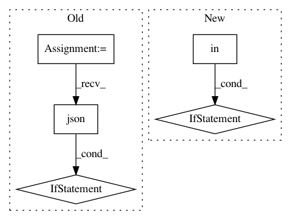

ab8c127a4a466f2c137239c0eb06c8143adea106,homeassistant/components/media_player/firetv.py,,setup_platform,#Any#Any#Any#Any#,48
Before Change
device_id = config.get(CONF_DEVICE)
try:
response = requests.get(
DEVICE_LIST_URL.format(proto, host, port)).json()
if device_id in response[CONF_DEVICES].keys():
add_entities([FireTVDevice(proto, host, port, device_id, name)])
_LOGGER.info("Device %s accessible and ready for control",
device_id)
else:
_LOGGER.warning("Device %s is not registered with firetv-server",
device_id)
except requests.exceptions.RequestException:
_LOGGER.error("Could not connect to firetv-server at %s", host)
After Change
host = "{0}:{1}".format(config[CONF_HOST], config[CONF_PORT])
if CONF_ADBKEY in config:
ftv = FireTV(host, config[CONF_ADBKEY])
adb_log = " using adbkey="{0}"".format(config[CONF_ADBKEY])
else:
ftv = FireTV(host)
adb_log = ""
if not ftv.available:
_LOGGER.warning("Could not connect to Fire TV at %s%s", host, adb_log)
return
In pattern: SUPERPATTERN
Frequency: 3
Non-data size: 5
Instances
Project Name: home-assistant/home-assistant
Commit Name: ab8c127a4a466f2c137239c0eb06c8143adea106
Time: 2018-11-18
Author: JeffLIrion@users.noreply.github.com
File Name: homeassistant/components/media_player/firetv.py
Class Name:
Method Name: setup_platform
Project Name: dataiku/dataiku-contrib
Commit Name: 6d8b17c9bc792474a2b69d97407163508039ad1d
Time: 2016-01-17
Author: jeremy.greze@dataiku.com
File Name: email-tester-suite/custom-recipes/email-tester-locally/recipe.py
Class Name:
Method Name:
Project Name: home-assistant/home-assistant
Commit Name: 3b3f5fe6fe2092a5071491fafce11b3851d07ce8
Time: 2015-11-08
Author: paulus@paulusschoutsen.nl
File Name: homeassistant/components/notify/instapush.py
Class Name:
Method Name: get_service